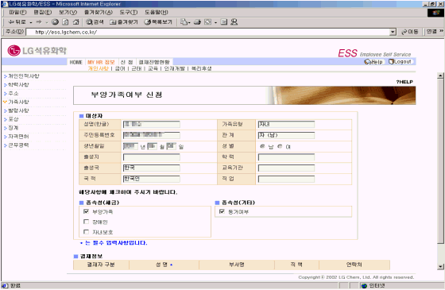

| Ⅱ. 화면사용법 및 유의사항 |
| <그림 1. 가족사항 조회 화면> |
|
| |
| 1) 가족사항을 조회하고, 가족등록사항을 변경하고자 할 때는 "수정"버튼을 클릭한다. |
| 2) 가족을 삭제하고자 할 경우에는 "삭제"버튼을 클릭한다. |
| (인적공제 대상자로 당해년에 사망한 부양가족이 있는 경우는 삭제하지 않음) |
| 3) 부양가족으로 등재하고자 할 때에는 "부양가족여부 신청"버튼을 클릭한다. |
| 4) 가족수당을 신청하고자 할 때에는 "가족수당 신청"버튼을 클릭한다. |
| |
| <그림 2. 부양가족여부 신청 화면> |
|  |
| |
| 1) 부양가족으로 등재되는 대상자는 연말정산시 소득공제에 적용된다. |
| 2) 부양가족여부 신청을 하기 위해 "부양가족", "장애인", "자녀보호", "동거여부" 등 해당사항에 체크한 후 |
| 결재정보를 확인하고 신청버튼을 클릭한다. |
| 3) 자녀보호에 체크하는 경우는 기혼여사원이나 배우자가 없는 남자사원의 경우만 해당된다. |
| |